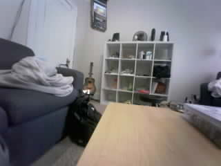
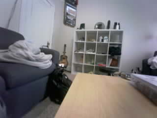
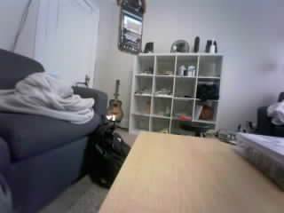
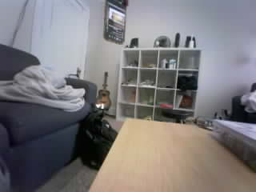
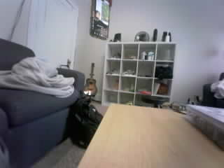
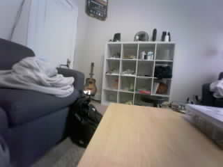

Frame 799: SMALL_CHANGE | 1.042% changed area
Original JPEG · MeasurementsOriginal photos are unchanged. Boxes show the largest changed region against the learned empty scene. Area cutoff: 3%; confirmation: 3 frames. This is not deer recognition.

Frame 799: SMALL_CHANGE | 1.042% changed area
Original JPEG · Measurements
Frame 806: SMALL_CHANGE | 1.500% changed area
Original JPEG · Measurements
Frame 813: SMALL_CHANGE | 1.708% changed area
Original JPEG · MeasurementsFrame 820: SMALL_CHANGE | 1.604% changed area
Original JPEG · Measurements
Frame 827: SMALL_CHANGE | 1.604% changed area
Original JPEG · Measurements
Frame 834: SMALL_CHANGE | 1.312% changed area
Original JPEG · MeasurementsFrame 841: SMALL_CHANGE | 0.604% changed area
Original JPEG · MeasurementsFrame 848: SMALL_CHANGE | 0.875% changed area
Original JPEG · MeasurementsFrame 855: SMALL_CHANGE | 0.979% changed area
Original JPEG · MeasurementsFrame 862: SMALL_CHANGE | 1.042% changed area
Original JPEG · MeasurementsFrame 869: SMALL_CHANGE | 0.896% changed area
Original JPEG · Measurements
Frame 876: SMALL_CHANGE | 0.979% changed area
Original JPEG · Measurements